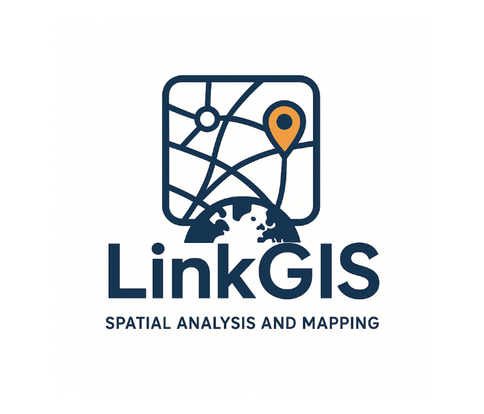

WebGIS Pertanahan
Sistem Informasi Geografis
Untuk Pengelolaan dan Pemetaan
Tanah Kas Desa serta Tanah Dadan secara digital.
Tanah Kas Desa serta Tanah Dadan secara digital.
Pilih kategori data:
Versi 1.0.0 – Update 2025